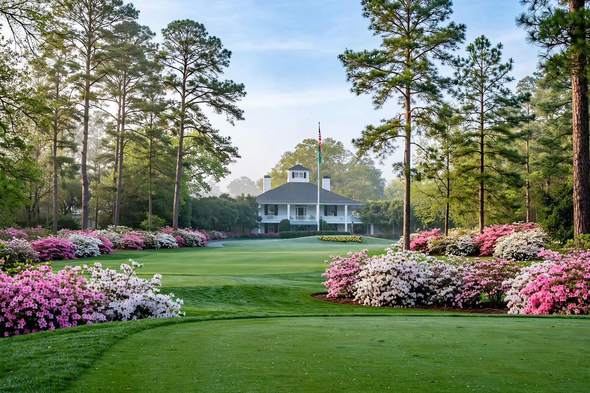

From Wikipedia, the free encyclopedia
| Masters Tournament | |
|---|---|
 The clubhouse and blooming azaleas at Augusta National Golf Club during Masters week | |
| Established | 1934 |
| Course | Augusta National Golf Club, Augusta, Georgia, US |
| When | First full week of April (traditionally) |
| Format | Stroke play, 72 holes, invitational field |
| Prize | Green jacket; champion's trophy |
| Most wins | Jack Nicklaus (6) |
The Masters Tournament is one of the four major championships in professional golf, and the only one played at the same venue every year: Augusta National Golf Club in Augusta, Georgia. Founded in 1934 by Bobby Jones and Clifford Roberts, the invitational event is held each spring, traditionally concluding on the second Sunday of April. The winner is presented with the tournament's iconic green jacket, which champions may keep for a year before returning it to the club, and is awarded lifetime qualification for the event.
Jones, the most celebrated amateur golfer of his era, built Augusta National with designer Alister MacKenzie on a former plant nursery, and the first tournament — initially called the Augusta National Invitation Tournament — was won by Horton Smith in 1934. Gene Sarazen's albatross at the par-5 15th in 1935, the "shot heard round the world", helped establish the event's fame. Jack Nicklaus won a record six titles between 1963 and 1986, the last at age 46; Tiger Woods has won five, including his era-defining 12-shot victory in 1997 and a celebrated comeback triumph in 2019. In 2025 Rory McIlroy won his first green jacket in a playoff, completing the career Grand Slam.
The Masters is steeped in ritual: the ceremonial honorary starters, the Par-3 Contest on Wednesday, the champions' dinner hosted by the defending champion, and patrons (never "fans" in club language) following play among the azaleas and Georgia pines. The second nine's stretch from the 11th to the 13th is known as Amen Corner, where the tournament is often decided around Rae's Creek. Unlike the other majors, the Masters has the smallest field of the four, restricted to invitees, past champions and leading amateurs and professionals.
The Masters opens the major season ahead of the PGA Championship, the U.S. Open and The Open Championship. Its winners join those of the other majors in the small group of golfers to have completed the career Grand Slam.
Categories: Masters Tournament | Golf tournaments in the United States | Major championships in golf